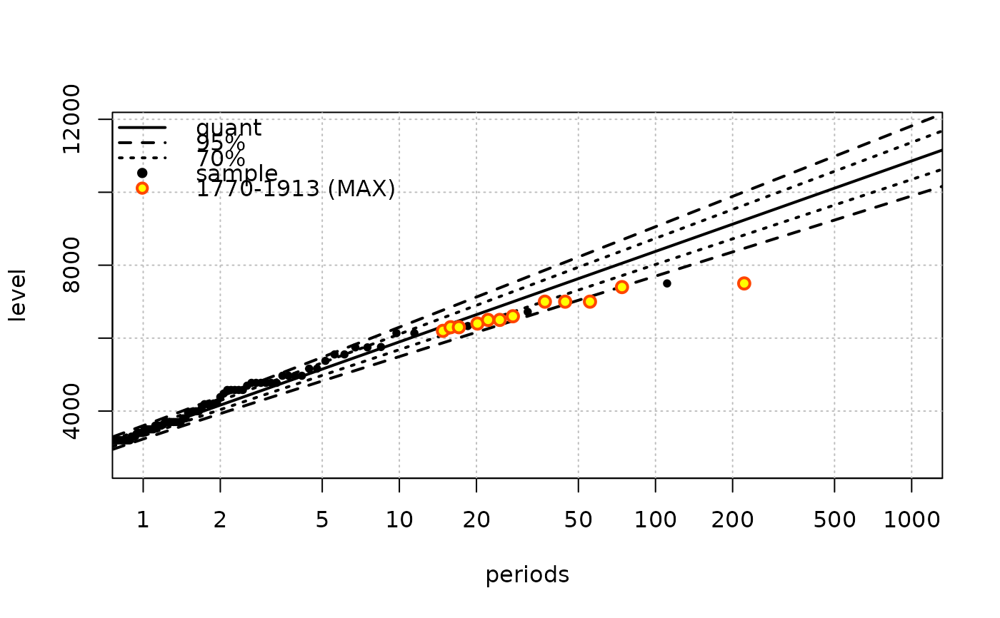
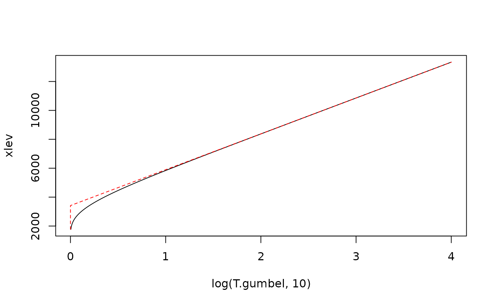

Translate a vector of coefficients from a Renewal-POT model with exponential excesses to a vector of Gumbel parameters
Ren2gumbel.RdTranslate a vector of coefficients from a Renewal-POT model with exponential excesses to a vector of Gumbel parameters.
Arguments
- object
-
A named vector of parameters or an object of class
"Renouv". In the first case, the names of the vector element must conform to the exponential distribution so the vector must be of length 2 with names"lambda"and"rate". - threshold
-
A threshold associated with the parameters. If
objectis an object with class"Renouv", its threshold slot will be used. - w
-
A block duration or a vector of block durations.
- distname.y
-
The name of the distribution for the excesses. Can be either
"exponential"or"exp". The choice has no impact on the computations, but this name will be attached to the result as an attribute and may affect later use. - jacobian
-
Logical. If
TRUEthe jacobian matrix of the transformation will be computed and attached to the result as an attribute. - vcovRen
-
A covariance matrix for the Renouv parameters.
Value
A vector of GEV parameters if w has length 1, and a matrix if
w has length > 1. The returned objects has attributes.
See also
Ren2gev for the translation of Renouv parameters
corresponding to GPD excesses.
Examples
## Fit a Renouv model with exponential excesses (default)
fit <- Renouv(Garonne)

## Convert to gumbel (usable for one-year block maxima)
parGumbel <- Ren2gumbel(fit)
## Retrieve the 'Renouv' model by giving the right threshold
parRen <- gumbel2Ren(parGumbel,
threshold = 2500,
vcovGumbel = attr(parGumbel, "vcov"),
plot = TRUE)
#> loc scale
#> loc 8719.318 2564.989
#> scale 2564.989 4116.247
#> loc scale
#> lambda 0.002173328 -1.849022e-03
#> threshold 1.000000000 0.000000e+00
#> rate 0.000000000 -8.615349e-07
#> lambda rate
#> lambda 3.464240e-02 1.754489e-06
#> rate 1.754489e-06 3.055253e-09
## Build a compatible model under the assumption of one event by
## year
parRen2 <- gumbel2Ren(parGumbel,
lambda = 1.00,
vcovGumbel = attr(parGumbel, "vcov"),
plot = TRUE)

#> loc scale
#> loc 8719.318 2564.989
#> scale 2564.989 4116.247
#> loc scale
#> lambda 0 0.000000e+00
#> threshold 1 0.000000e+00
#> rate 0 -8.615349e-07
#> lambda rate
#> lambda 0 0.000000e+00
#> rate 0 3.055253e-09
parRenNames <- c("lambda", "rate")
## Build a 'Renouv' object without estimation
myVcov <- attr(parRen, "vcov")[parRenNames, parRenNames]
fitNew <- RenouvNoEst(threshold = attr(parRen, "threshold"),
estimate = parRen,
distname.y = "exp",
cov = myVcov)
#> Warning: warning: distribution not in target list. Still EXPERIMENTAL
## Compare return levels
cbind(roundPred(fit$pred)[ , -2], roundPred(fitNew$pred)[ , -2])
#> period L.95 U.95 L.70 U.70 period L.95 U.95 L.70 U.70
#> 30 10 5494 6300 5684 6110 10 5501 6293 5688 6107
#> 33 20 6160 7128 6388 6900 20 6161 7127 6389 6900
#> 36 50 7038 8224 7318 7945 50 7033 8230 7315 7948
#> 38 100 7701 9055 8020 8736 100 7693 9063 8016 8740
#> 41 200 8363 9887 8722 9528 200 8352 9897 8716 9533
#> 43 300 8750 10373 9132 9991 300 8738 10385 9126 9997
#> 44 400 9024 10719 9424 10320 400 9012 10731 9417 10326
#> 46 500 9237 10987 9649 10575 500 9225 11000 9643 10581
#> 47 600 9411 11206 9834 10783 600 9398 11219 9827 10790
#> 48 700 9558 11391 9990 10959 700 9545 11404 9983 10966
#> 49 800 9686 11551 10125 11112 800 9672 11565 10118 11119
#> 51 900 9798 11693 10244 11246 900 9784 11707 10237 11254
#> 52 1000 9898 11819 10351 11367 1000 9884 11833 10343 11374
## idem for the putative 'Renouv' with rate 1
myVcov2 <- attr(parRen2, "vcov")[parRenNames, parRenNames]
fitNew2 <- RenouvNoEst(threshold = attr(parRen2, "threshold"),
estimate = parRen2,
distname.y = "exp",
cov = myVcov2)
#> Warning: warning: distribution not in target list. Still EXPERIMENTAL
cbind(roundPred(fit$pred)[ , -2], roundPred(fitNew2$pred)[ , -2])
#> period L.95 U.95 L.70 U.70 period L.95 U.95 L.70 U.70
#> 30 10 5494 6300 5684 6110 10 5608 6187 5744 6050
#> 33 20 6160 7128 6388 6900 20 6268 7020 6445 6843
#> 36 50 7038 8224 7318 7945 50 7140 8123 7371 7891
#> 38 100 7701 9055 8020 8736 100 7800 8957 8072 8684
#> 41 200 8363 9887 8722 9528 200 8459 9790 8773 9477
#> 43 300 8750 10373 9132 9991 300 8845 10278 9183 9941
#> 44 400 9024 10719 9424 10320 400 9119 10624 9474 10270
#> 46 500 9237 10987 9649 10575 500 9331 10893 9699 10525
#> 47 600 9411 11206 9834 10783 600 9505 11112 9884 10733
#> 48 700 9558 11391 9990 10959 700 9652 11297 10039 10910
#> 49 800 9686 11551 10125 11112 800 9779 11458 10174 11062
#> 51 900 9798 11693 10244 11246 900 9891 11600 10293 11197
#> 52 1000 9898 11819 10351 11367 1000 9991 11726 10400 11318